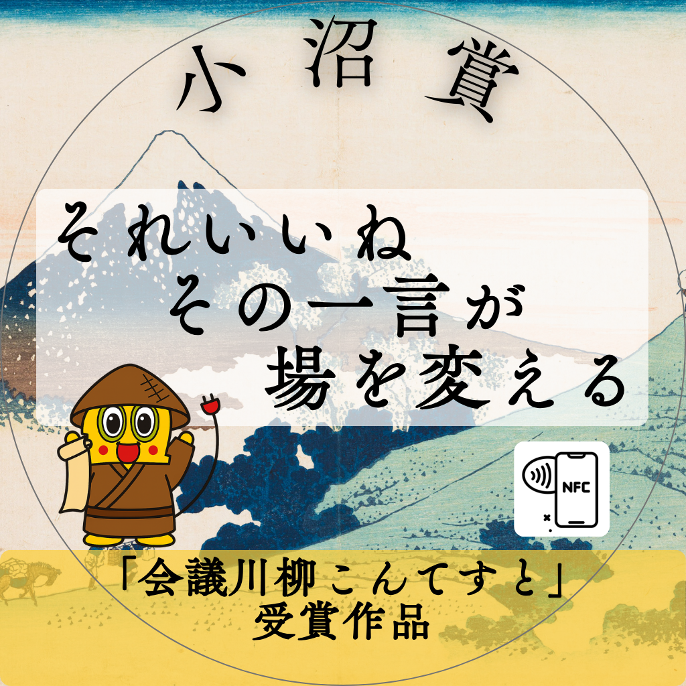

会議川柳 受賞作品

大賞【小沼賞】
それいいね その一声が 場を変える
PN:Pay
大賞【働き方改革賞】
この会議 私必要？ 地蔵時間
PN:伊藤純
優秀賞【特別アクション賞①】延長を 笑顔で断つは 締め名人 PN:業革のラーメンヲタ
優秀賞【特別アクション賞②】うなずきが 意見引き出す 潤滑剤 PN:K
優秀賞【特別アクション賞③】会議では 発言ことが 成長へ PN:松ちゃん
優秀賞【改善賞】会議前 アジェンダ作って 皆すっきり PN:タイパ希望之助
【モモっと賞】良案を 提示で帰る みな定時 PN:小林 正則
【クスッとのき賞】打合せ 議題は次の 打合 PN:定時ダッシュ
【Our100th賞】イマイチと 言うなら出そう 代替案 PN:事務局のひとりごと
【ルーキー賞】共鳴は 沈黙の中 芽吹く声 PN:秦幹太郎
【一番早いで賞】長いのに 簡単ですが 以上です PN:アンディ・ラウ
【ラストワン賞】皆やる気 話まとまる しかいよし PN:おーいはにまる
【言葉の魔術師賞】ニッチです ニュー言語が 認っ知です PN:ＣＯＯ
【想いが伝わったで賞】所要時間 守ってくれて ありがとね！ PN:司会ザッキー
【共感できるで賞】助かるよ クリック一つの 意思表示 PN:緑湘酔人
【これはダメで賞】打ち合わせ 会話はいつも にてらごし PN:たかあき
【会議PJメンバー賞】「飽き」深き 隣は何を する人ぞ PN:松尾芭蕉界隈
再生ボタンを押すと音が流れます。